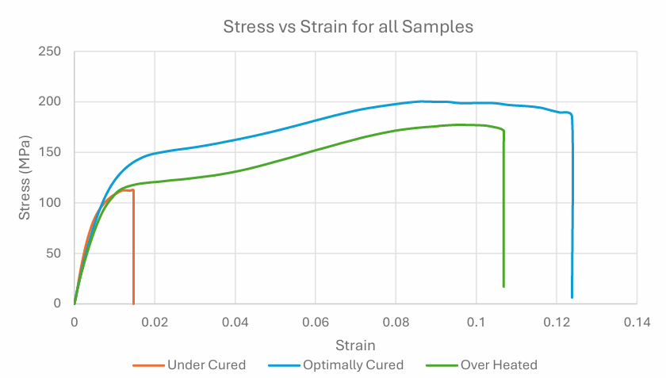
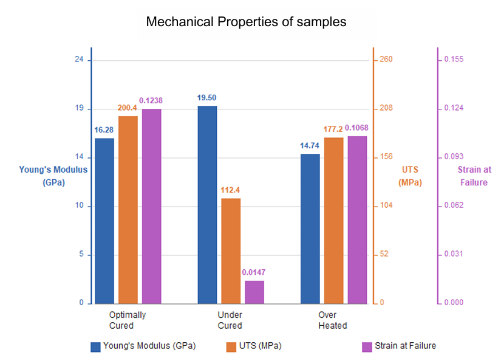
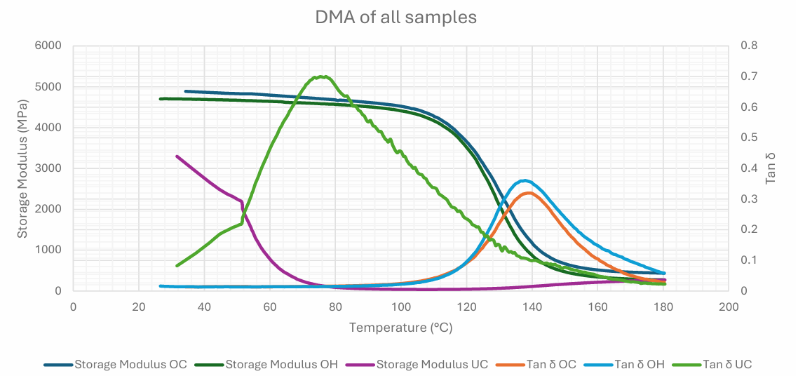
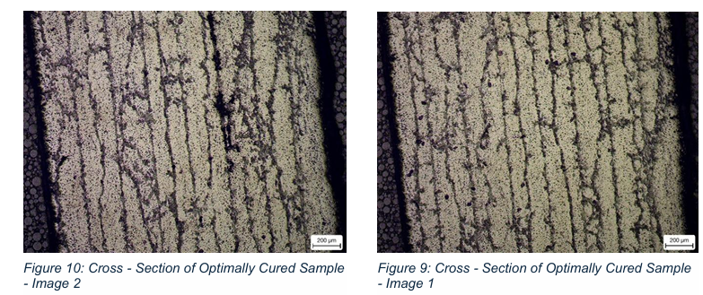
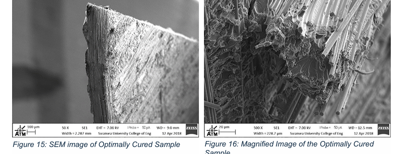
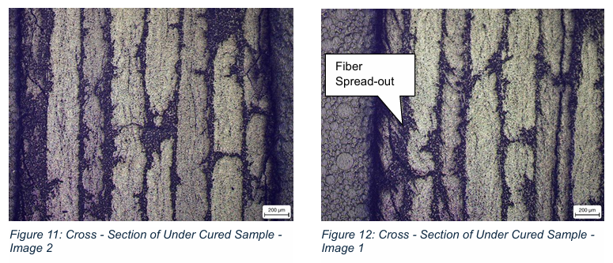
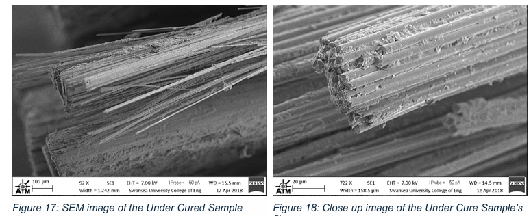
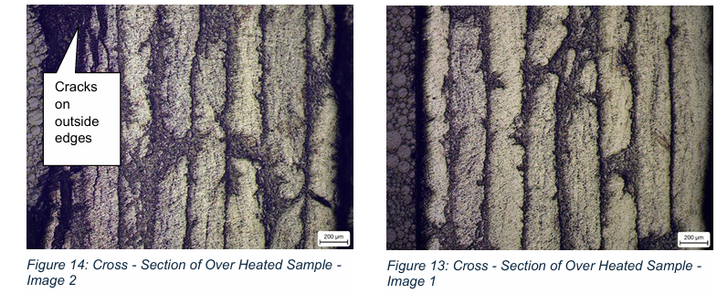
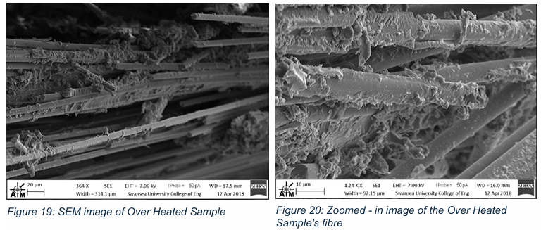

Project Overview
A solo materials-characterisation study into how curing temperature and time affect the mechanical and thermal properties of a carbon fibre / epoxy composite. Three ±45° carbon fibre prepreg laminates were cured under different conditions: under-cured (90°C, 1 hour), optimally cured (120°C, 1 hour), and over-heated (240°C, 4 hours). These were then compared using tensile testing, Dynamic Mechanical Analysis (DMA), optical microscopy, and Scanning Electron Microscopy (SEM).
Technical Approach
Key techniques
- Prepared three ±45° carbon fibre prepreg laminates, each vacuum-bag cured under a different temperature/time combination to simulate under-cure, optimal cure, and over-heating
- Ran tensile tests on a Hounsfield machine with a 25 kN load cell to extract Young's modulus, ultimate tensile strength, and strain at failure for each sample, cross-checking extensometer-based strain against the machine's cross-head (compliance) strain
- Characterised thermal behaviour with a PerkinElmer DMA 8000, extracting storage modulus and glass transition temperature (Tg) via both the tangent-onset method and the Tan δ peak
- Examined polished cross-sections under a ZEISS optical microscope (5×) for delamination and matrix cracking, then examined tensile fracture surfaces under ZEISS EVO LS25 SEM to identify the dominant failure mode for each sample
Process steps
- Cured the under-cured, optimally cured, and over-heated samples to their respective temperature/time schedules, then ran the tensile test on all three
- Ran DMA on all three samples across a temperature sweep, extracting storage modulus and Tg by both the tangent-onset method and the Tan δ peak
- Polished and etched cross-sections for optical microscopy, then examined fracture surfaces under SEM, to relate the microstructural defects and fracture mode back to the tensile and DMA results
Results & Analysis
The optimally cured (OC) sample outperformed both the under-cured (UC) and over-heated (OH) samples on every mechanical measure: the highest ultimate tensile strength (200.4 MPa vs. 112.4 MPa for UC and 177.2 MPa for OH) and strain at failure (0.124 vs. 0.015 for UC and 0.107 for OH), with a moderate Young's modulus (16.3 GPa) reflecting a fully cross-linked matrix. The under-cured sample had the highest modulus (19.5 GPa) but failed at the lowest stress and strain, a sign of incomplete cross-linking leaving a stiff but brittle, poorly bonded matrix.


DMA confirmed the same pattern: the glass transition temperature (from the tangent-onset method) was 120°C for OC, 115°C for OH, and only 50°C for UC, nearly half the other two, meaning the under-cured sample would lose mechanical performance at a much lower service temperature.

Optical microscopy and SEM traced these results back to the microstructure. The OC sample showed almost no defects and a clean fibre-matrix bond, with fibre breakage as the dominant failure mode. The UC sample showed intralaminar matrix cracking, delamination, and visible fibre spread-out from a weak fibre-matrix bond, consistent with a matrix-dominated failure. The OH sample showed severe matrix cracking and delamination from thermal degradation (chemical aging), with SEM revealing resin lumps unevenly attached to the fibres in a mixed fibre-breakage and matrix-failure mode.






Key learnings
Running the same set of tests across three cure conditions made the trade-off concrete: curing below the optimum temperature leaves incomplete cross-linking and a brittle, low-Tg matrix, while curing too far above it in time and temperature triggers thermal degradation that reverses some of those cross-links again. The 120°C / 1-hour condition sits at the peak of that curve, a reminder that more cure time or heat isn't automatically better once the resin is fully cross-linked.